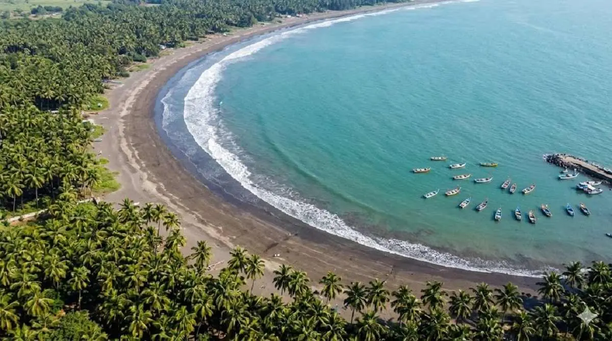

Recommended Stay
Dolphin House Beach Resort is a peaceful coastal resort located near Nagaon Beach. The property offers comfortable rooms and a relaxing beachside environment suitable for couples and families.
Alibaug is one of the most popular coastal destinations near Mumbai. The town is known for beautiful beaches, historic forts, water sports and relaxing beach resorts. Visitors often travel to Alibaug for weekend trips, enjoying sunset views, seafood restaurants and peaceful seaside stays.

From relaxing beach walks to water sports and historic landmarks, Alibaug offers plenty of activities for visitors planning a short coastal holiday.
Nagaon Beach is one of the most famous beaches in Alibaug. The wide sandy shoreline and coconut trees create a perfect setting for relaxing beach holidays. Visitors can also enjoy water sports activities such as jet ski rides and banana boat rides.
Kolaba Fort is one of the most historic attractions in Alibaug. Located just off the shore of Alibaug Beach, the fort can be reached by walking during low tide. The fort offers beautiful views of the Arabian Sea.
Adventure lovers can try several water sports in Alibaug, especially at Nagaon Beach. Popular activities include jet skiing, parasailing and banana boat rides.
Kashid Beach is known for its white sand and clear water. It is one of the most scenic beaches near Alibaug and perfect for relaxing coastal trips.
Alibaug is famous for its coastal cuisine. Visitors often enjoy fresh seafood dishes such as fish fry, prawn curry and crab masala served in local restaurants. See our guide to best seafood restaurants in Alibaug .
Sunset views in Alibaug are beautiful and peaceful. Many visitors gather at the beach in the evening to watch the sun set over the Arabian Sea. You can also explore best sunset spots in Alibaug .
Kihim Beach is a quieter beach surrounded by greenery. It is ideal for travelers who prefer peaceful coastal locations away from crowds.
The region around Alibaug includes several traditional Konkan villages. Exploring these villages offers visitors a glimpse of local culture and coastal life.
One of the most enjoyable parts of visiting Alibaug is the ferry journey from Mumbai to Mandwa Jetty. Learn more in our guide on how to reach Alibaug from Mumbai .
Many travelers choose to stay at beach resorts in Alibaug to enjoy sea views and a relaxing environment. Explore the best hotels in Alibaug or resorts near Nagaon Beach .
Dolphin House Beach Resort is a peaceful coastal resort located near Nagaon Beach. The property offers comfortable rooms and a relaxing beachside environment suitable for couples and families.